GraphRAG.
From Local
→
Global
Retrieval
An engineering deep-dive into knowledge-graph construction, community detection, and map-reduce query paradigms — the architecture that lets retrieval answer questions traditional vector RAG cannot.
What we will cover
Why traditional RAG fails on global queries.
Chunking → extraction → graph → community detection → summaries.
Entities, relationships, communities, parquet output tables.
Local (graph traversal), Global (map-reduce), DRIFT, Basic.
The pre-computed reasoning layer that powers global search.
Cost, latency, freshness, prompt tuning, agentic routing.
The Problem Space
Traditional RAG: what it is, and what it cannot do
Traditional RAG chunks documents, embeds them as vectors, and at query time retrieves the most similar chunks to feed the LLM. The mechanism is chunk → embed → vector search → LLM.
- Specific, localized factual questions
- "What is the refund policy?"
- "How do I configure the auth module?"
- The answer lives in one or a few chunks
- Fast indexing, low latency, cheap to operate
- Cross-document reasoning
- "What are the major themes across all reports?"
- "Summarize the key risks across all projects."
- Answer is distributed, retrieval is pointwise
- Vector similarity is a local operation
The "global question" failure mode
Query
"What are the recurring risks across
all 200 project reports?"
Why vector RAG fails
- ✗ No mechanism to aggregate signals across the corpus
- ✗ No pre-computed understanding of document clusters
- ✗ Top-k retrieval returns a fragmented sample, not a synthesis
- ✗ The LLM ends up synthesizing from locally-relevant scraps

The GraphRAG Pipeline
Four innovations that make GraphRAG different
GraphRAG-style systems share four core innovations — Microsoft's implementation is the reference design we'll use throughout.

- Entity & Relationship Extraction. An LLM reads each chunk and extracts entities (with type + description) and relationships (with description + strength score). Single LLM call per chunk.
- Knowledge Graph Construction. Entities become nodes, relationships become edges with aggregated weights. Duplicates are merged across chunks by exact string match.
- Community Detection. The Hierarchical Leiden algorithm partitions the graph into clusters of densely-connected nodes at multiple granularity levels (0 → 2+).
- Community Summarization ⭐. An LLM generates a structured report for each community at each level. These are pre-computed "big-picture" views — the key innovation.
Two ways to query the graph
The graph + community summaries give you two complementary retrieval modes.
- Embedding similarity → seed entities
- Traverse the entity neighborhood in the graph
- Pull entity descriptions, edge descriptions, connected chunks, and the community report
- Build a rich, structured context window
- Map: fan the query out to every community summary
- Extract relevant points from each in parallel
- Reduce: aggregate into one coherent answer
- Leverages pre-computed "big-picture" views
It's not a free upgrade — pick the right tool
| Dimension | Traditional RAG | GraphRAG |
|---|---|---|
| Retrieval method | Vector similarity (nearest chunks) | Graph traversal (local) + community summaries (global) |
| Good at | Specific, localized factual questions | Both specific and broad thematic synthesis |
| Fails at | Cross-document reasoning, themes, aggregation | Nothing fundamental — has cost/latency tradeoffs |
| Indexing cost | Low (just embed chunks) | High — LLM call per chunk + summarization passes |
| Query latency | Fast (single retrieval + LLM call) | Local: similar · Global: slower (map-reduce) |
| Data freshness | Easy to add new chunks | Requires re-indexing when data changes |
The full pipeline at a glance
Six build-time stages produce the graph + summaries · two runtime engines consume them.
Indexing · Chunking
Token-based fixed-size chunking
In traditional RAG, chunk size affects retrieval precision. In GraphRAG, chunk size directly controls entity extraction quality — and that cascades through the entire pipeline (graph, communities, summaries, query quality).
# Microsoft GraphRAG's settings.yaml — chunking defaults
# (any GraphRAG faces the same tokens/overlap decision)
chunks:
size: 1200 # tokens per chunk
overlap: 100 # shared tokens between adjacent chunks
group_by_columns: [id] # do not cross document boundaries
prepend_metadata: true # prefix each chunk with doc title/tags
# (metadata text NOT counted in size)
Bring your own chunks: if you already have a semantic chunker, feed GraphRAG one short file per chunk — its chunking step is then effectively bypassed.

Chunk size · the central tradeoff
Every GraphRAG faces this tradeoff. Microsoft's defaults (✓) below — yours may differ.
| Size | Entity quality | Cost | Speed | Best for |
|---|---|---|---|---|
300 tok (old default) |
High precision, may miss cross-paragraph relations | Very high | Slow | Fine-grained provenance |
1200 tok ✓ |
Catches cross-paragraph context, good balance | Moderate | Faster | General purpose (current default) |
2000+ tok |
May lose fine-grained entities | Low | Fastest | Cost-sensitive analysis |
Order-of-magnitude: for a 26,000-word document, dropping from 300 → 1200 token chunks cuts extraction calls from ~260 to ~26 — a 10× cost reduction.
Entity & Relationship Extraction
One LLM call per chunk → structured tuples
A single LLM call per chunk asks the model to (1) identify all entities with a name, type, and description, then (2) identify all pairs of clearly-related entities and emit a relationship description plus a numeric strength score.
Output format · entity tuple
("entity" | ENTITY_NAME | ENTITY_TYPE | "description")
Output format · relationship tuple
("relationship" | SOURCE | TARGET | "why related" | STRENGTH)
The STRENGTH score is later aggregated — the edge weight column in the
final relationship table is the sum of LLM-assigned strengths, not a co-occurrence count.

Four parts of the extraction prompt
Microsoft's prompt template — the same anatomy applies to any LLM-based extractor.
- Extraction instructions — guides the LLM on how to extract and which types to look for.
- Few-shot examples — defaults: 15 entities, 12 relationships, restricted to organization, geography, person.
- Text chunk — placeholder for the content to process.
- Gleanings — multi-turn loop that encourages the LLM to extract items it missed on the first pass.
Default entity types
Custom types for an agentic AI codebase
Function · Module · API · DataSource ·
Agent · Tool · Prompt · Risk
Auto-tune to your domain
graphrag prompt-tune \ --root ./data --domain "your-domain"
Deduplication & entity summarization
The problem
The same entity is extracted from many chunks, each time with a slightly different description. A canonical example from the docs: the entity "Jon" was extracted 82 times across different text units in the same novel.
The mechanism
- Group all instances of an entity by exact string match on
(name, type). - Prompt the LLM to combine the descriptions into a single consolidated summary.
- Same procedure applied to relationships between the same entity pair.
No entity disambiguation.
"Jon" ≠ "Jon Márquez" → two nodes
Exact-match deduplication keeps these separate even when they refer to the same person.
Customize entity types and tune few-shot examples to reduce ambiguity at the source. Post-process with a coreference resolver if needed.
LLM-quality vs cheap NLP extraction
Microsoft ships this as two indexing modes — Standard (LLM) and Fast (NLP).
| Aspect | Standard (LLM) | Fast (NLTK / spaCy) |
|---|---|---|
| Extraction | LLM call, rich descriptions | Noun phrases, no LLM |
| Relationships | Described + weighted | Co-occurrence only |
| Chunk size | 1200 tok | 50–100 tok |
| Cost | High | Very low |
| Community summaries | Rich, contextual | Sparse, limited reasoning |
Fast indexing loses the rich descriptions that power community summaries — you trade quality for cost.
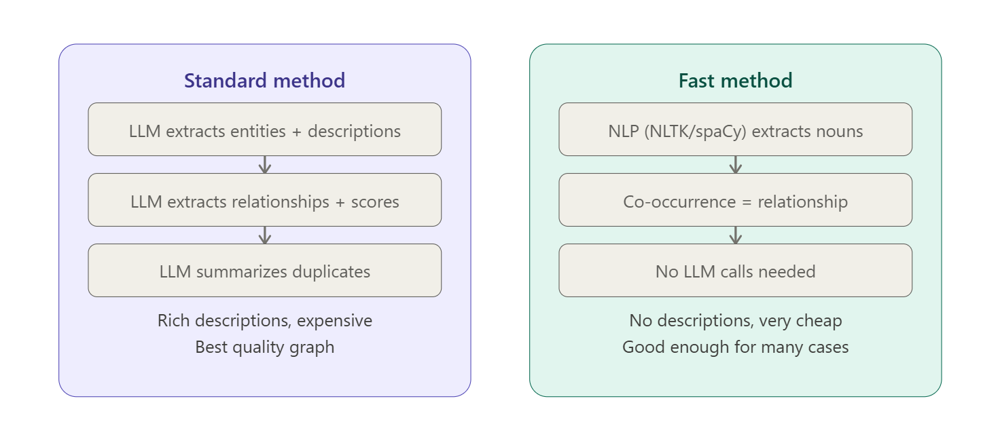
The Knowledge Graph
Graph layer · entities and weighted edges
- Nodes: entities with rich text descriptions (not just labels).
- Node size ∝ degree: highly-connected hubs (e.g. "Acme Corp") emerge visually.
- Edges: relationships with descriptions + aggregated
weight= sum of LLM strengths. - Edge thickness ∝ weight.
- Dashed edges: cross-community connections — bridges between clusters.
- Optional covariates: time-bound claims attached to entities.
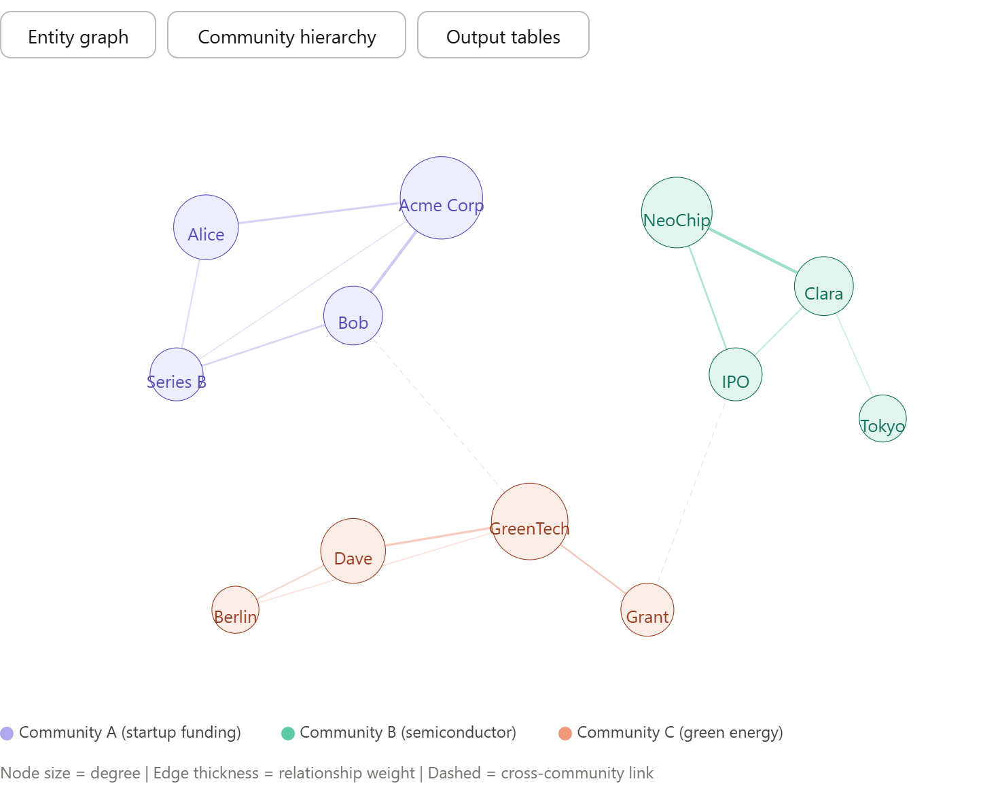
Hierarchical Leiden · multi-level communities
GraphRAG implementations cluster the entity graph — Microsoft (and most others) use the Hierarchical Leiden algorithm, which applies recursive community-clustering until a community-size threshold is reached, producing a hierarchy of partitions.
| Level | Granularity | ~ # comms | Use |
|---|---|---|---|
0 | Coarsest | 5–15 | Broad themes, cheap global search |
1 | Medium | 50–100 | Balanced detail vs cost |
2+ | Finest | 100s–1000s | Detailed analysis |
Invariant: within a level, communities are non-overlapping — every entity belongs to exactly one. Higher-level communities contain their lower-level children.
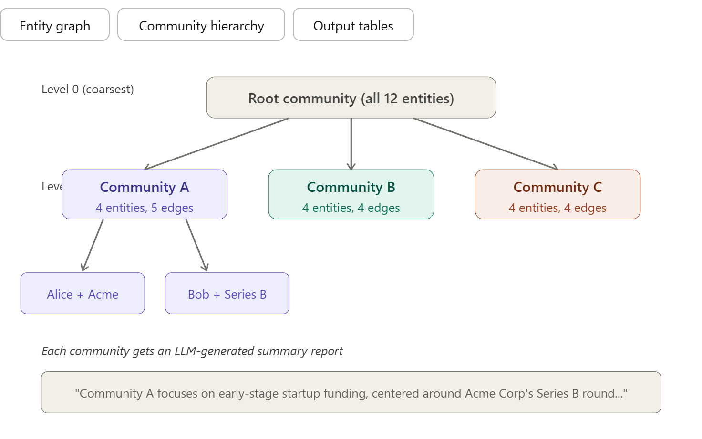
Data layer · the materialized graph
Microsoft GraphRAG materializes the graph as parquet files on disk — one table per concept, with foreign-key cross-references for full provenance. Other implementations may use a graph DB, vector store, or relational tables instead.
documents ↓ text_units # chunked text + offsets ↓ entities # name, type, description, embedding relationships # source, target, description, weight ↓ communities # parent_id, level, entity_ids[] community_reports # title, summary, rating, findings[] vector_store/ # embeddings (entities, text_units, ...)
Every claim downstream traces back through this chain to the source text.
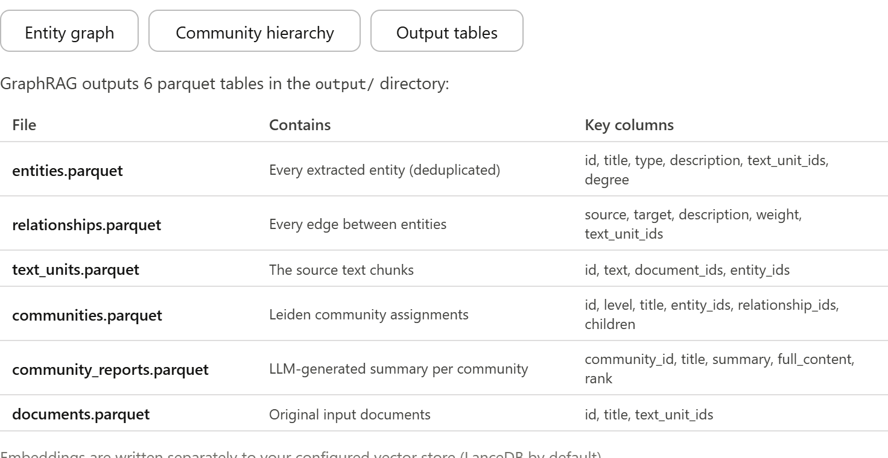
Local Search
Local search · the 5-step flow
- Embed the query.
- Find semantically related entities via vector similarity over entity embeddings.
- Traverse the neighborhood — collect connected entities, relationships, and optional covariates.
- Pull supporting context — the source text chunks and the community report for that area.
- Build a structured context window → LLM produces the answer.
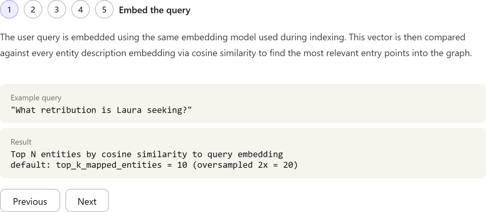
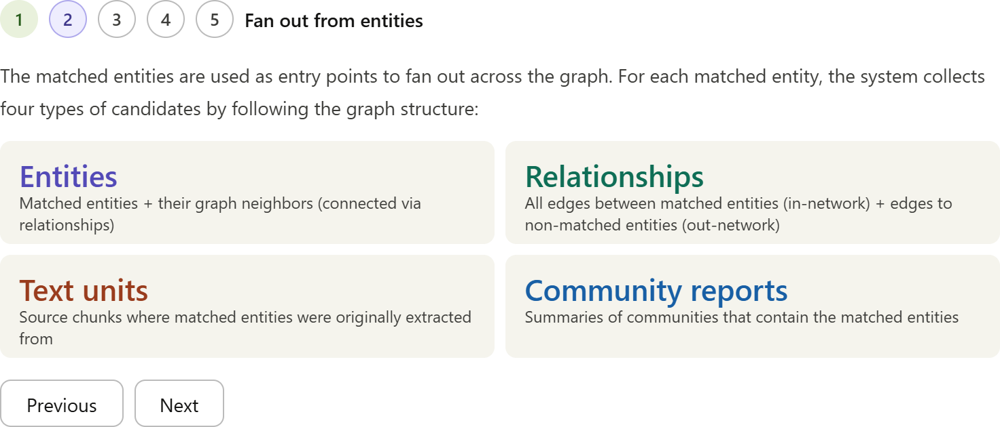
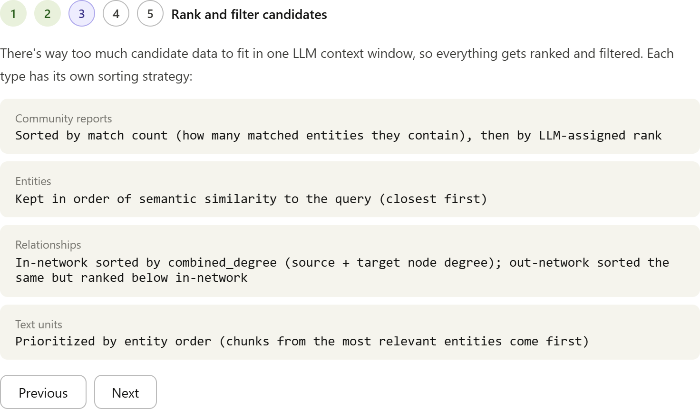
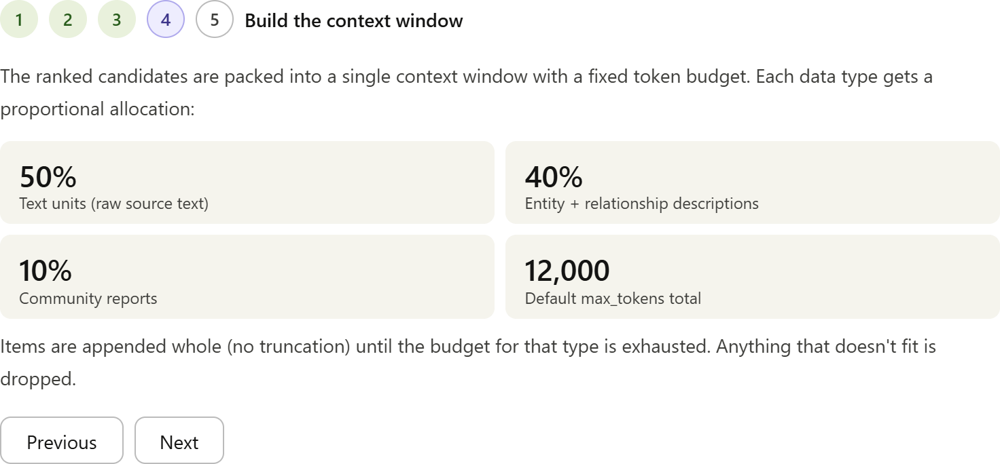
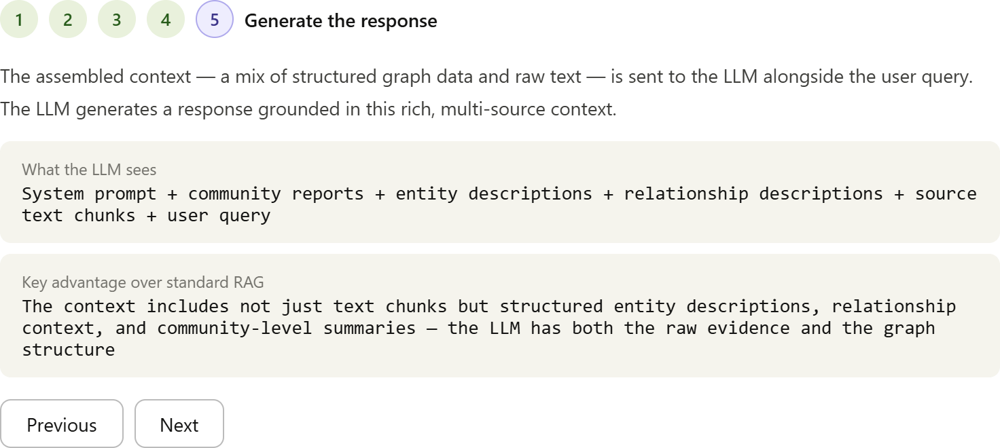
Context budget · how the tokens are spent
Microsoft's defaults shown — adjust to your model's window.
# Microsoft default context allocation max_tokens: 12000 text_unit_prop: 0.5 # → 50% source text chunks community_prop: 0.1 # → 10% community report # remaining 0.4 # → 40% entity + rel descriptions
Relationship ranking
Both endpoints matched the query — these are directly on-topic relationships.
One endpoint matched, the other did not — included because they often surface surprising context, but ranked lower.
Global Search
Global search · pre-computed reasoning + map-reduce
Global search uses the community reports from a chosen hierarchy level as context, and synthesizes an answer via map-reduce. The answer to "what are the main themes?" doesn't live in any chunk — it's distributed. Pre-computed community summaries do the synthesis work at indexing time so query-time can simply select and combine.
MAP phase · parallel
for each community_report at level L:
prompt LLM:
"Extract points relevant to {query}.
Return JSON: [{point, impact_rating}]"
REDUCE phase
collect_and_rank(all_points) prompt LLM: "Synthesize the highest-impact points into a single coherent answer."
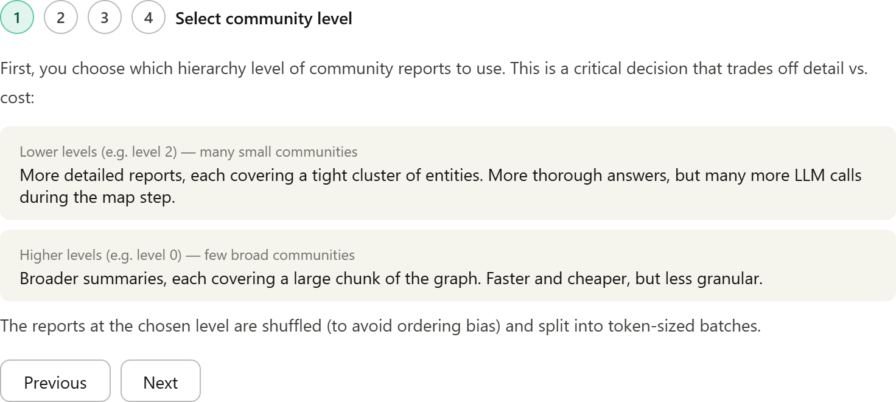
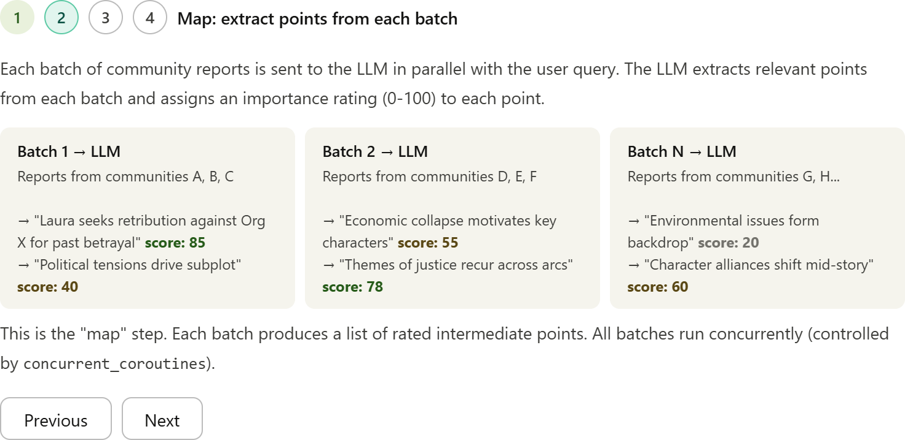
Reduce phase + community level tradeoff
Reduce
Map-extracted points carry impact ratings (inherited from each community's severity score). Reduce ranks and re-prompts the LLM to synthesize the high-impact points into a coherent answer.
Community level matters
| Level | # reports | Tradeoff |
|---|---|---|
0 | 5–15 | Cheap, broad |
1 | 50–100 | Balanced |
2 | 100s–1000s | Expensive, granular |
Lower levels yield more thorough answers, at higher latency and token cost.
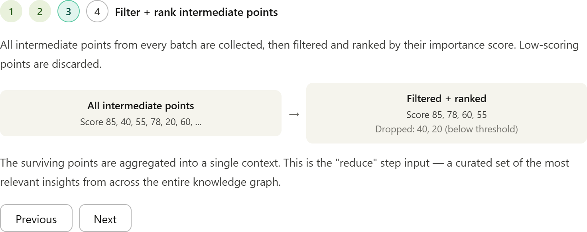
Optimization · prune branches before map
Microsoft calls this dynamic community selection — same idea works for any hierarchical-community global search.
Processes every community report at the chosen level — expensive, and many of those reports are irrelevant to the query.
- Start at the root of the community hierarchy.
- LLM rates relevance of current community report to query.
- Irrelevant? Prune branch + all sub-communities.
- Relevant? Descend into children, repeat.
Result: significant token cost reduction with quality often improved because the LLM no longer drowns in irrelevant reports.
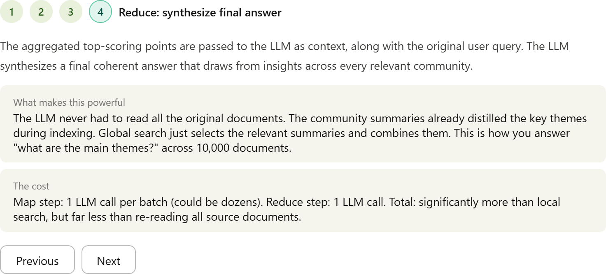
Community Reports
Community report · the JSON schema
The LLM is prompted to write a comprehensive assessment of a community with a strict structure: title, executive summary, 0–10 impact severity rating, and 5–10 findings — each grounded by entity/relationship references.
{
"title": "Short, specific, with named entities",
"summary": "Executive summary of structure & themes",
"rating": 8, // impact severity 0–10
"findings": [
{
"summary": "Finding headline",
"explanation": "Detailed grounded explanation",
"references": [
"entity_id:123",
"relationship_id:456"
]
},
/* 5–10 findings total */
]
}
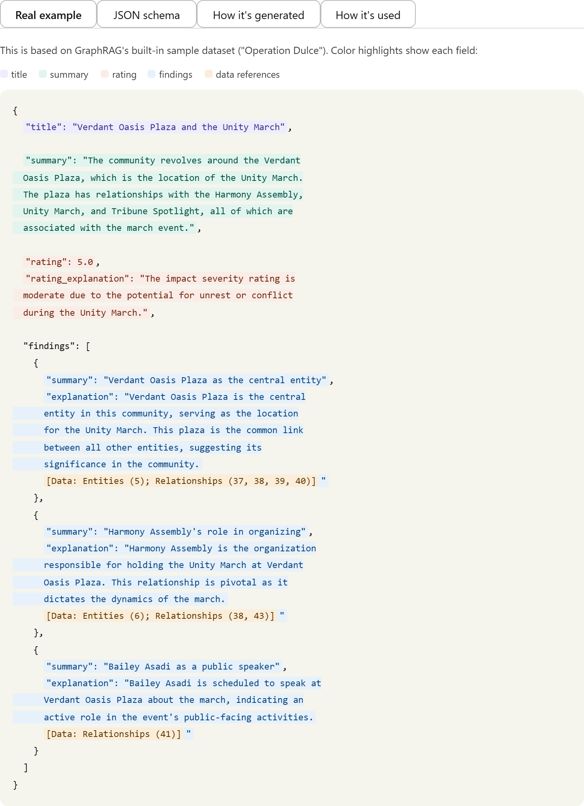
Three properties make reports the secret sauce
Every claim must cite specific entity_id or relationship_id values.
The LLM is instructed not to include information unsupported by evidence.
Reports are traceable back to source text.
The 0–10 severity score is not just metadata — it's used to rank communities during global search's reduce phase. For business docs it flags risk areas; for fiction, dramatic tension.
When a parent community is too large for raw entity/rel descriptions to fit in the LLM context, they are replaced by the sub-community reports. The parent becomes a "summary of summaries" — still grounded, at a higher abstraction.
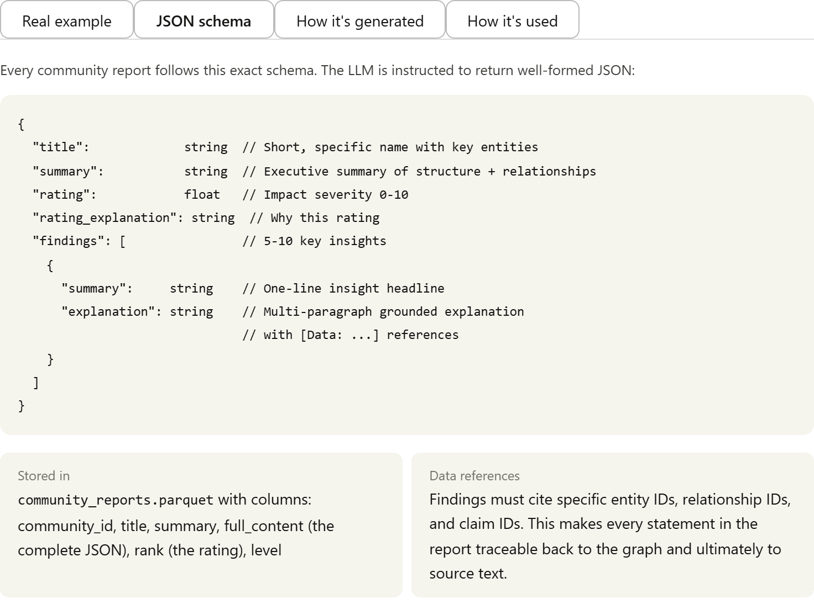
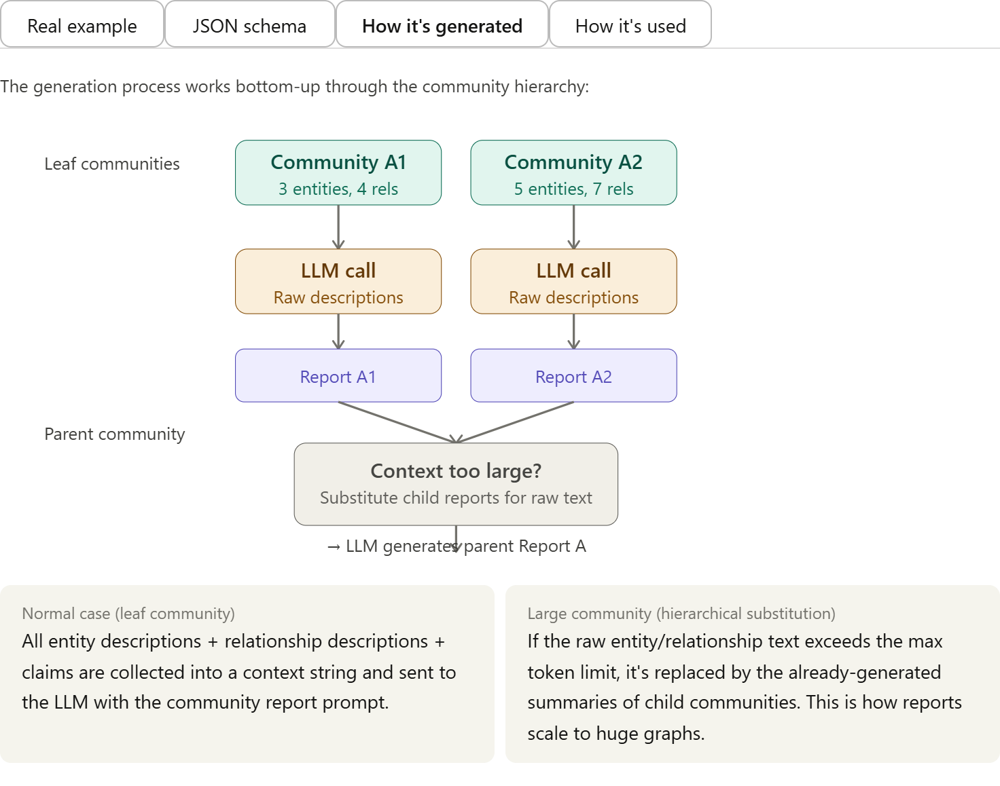
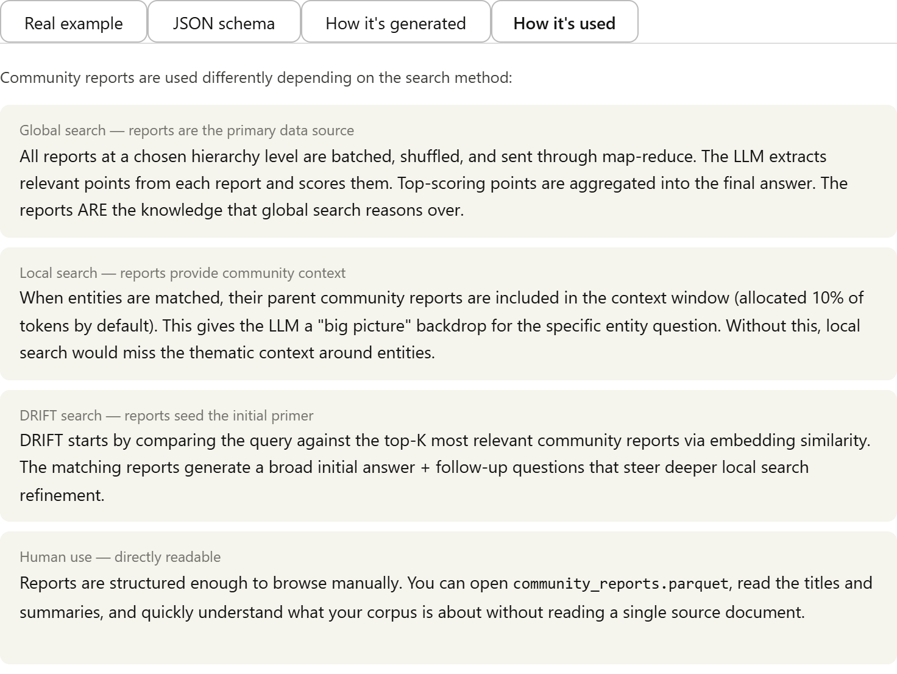
Query Modes & Routing
Four query modes at a glance
Microsoft GraphRAG ships four modes — local, global, DRIFT, basic. Local and global are universal GraphRAG concepts; DRIFT and basic are Microsoft's specific implementations.
| Method | Best for | Mechanism | Latency | Cost |
|---|---|---|---|---|
basic |
Simple similarity lookups | Standard top-k vector search (baseline RAG) | ⚡ Fast | Low |
local |
Specific entity questions | Embed query → entities → graph traversal → context → respond | 🚶 Medium | Medium |
global |
Broad thematic questions | Map-reduce across all community summaries | 🐌 Slow | High |
drift |
Complex — breadth & depth | Community reports → local refinement → hierarchical output | 🐢 Slowest | Highest |
DRIFT · Dynamic Reasoning and Inference with Flexible Traversal
Starts like global (community reports), then drills down via local with LLM-generated follow-up questions.
More expensive but produces both breadth and depth in one answer.
CLI flag: --method drift.
Agentic routing · don't make the user choose
The query mode is an implementation detail. Route automatically based on query intent, either with a lightweight heuristic or a small LLM classifier (the few tokens it costs will save you an expensive global call when one isn't needed).
def route_query(query: str) -> Literal[
"basic", "local", "global", "drift"
]:
q = query.lower()
# broad thematic signals → global
if any(w in q for w in
["themes", "summary", "overview",
"main", "across", "all"]):
return "global"
# named entity / fact signals → local
if any(w in q for w in
["who", "what is", "module",
"function", "depends on"]):
return "local"
# complex, ambiguous → drift
if "compare" in q or "why" in q:
return "drift"
return "basic"
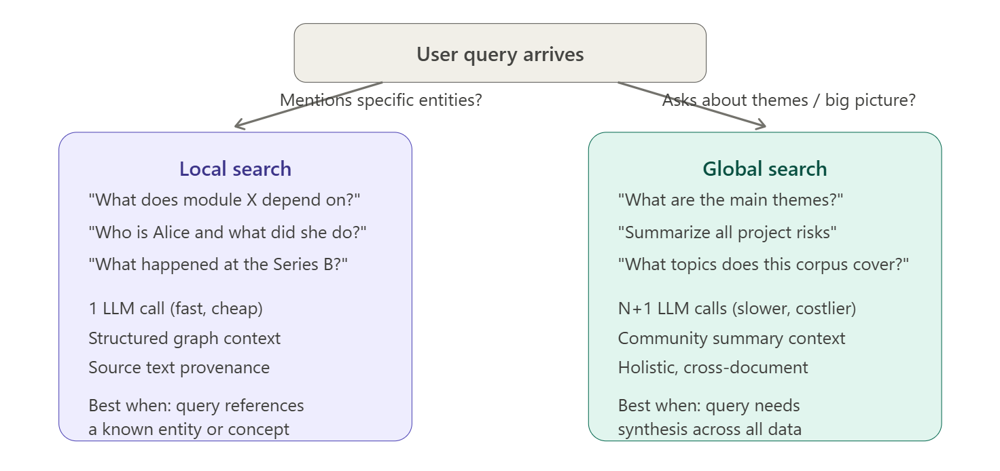
Production Concerns
Cost & latency · where the money goes
Example below uses Microsoft GraphRAG on GPT-4o pricing — exact numbers depend on your model + corpus, but the proportions are universal.
Indexing · one-time, expensive
- 1 extraction LLM call per chunk
- 1 summarization LLM call per community
- Embedding calls for all entities + text units
Query · per-call
| Mode | Latency | Notes |
|---|---|---|
basic | < 1s | 1 LLM call |
local | 1–2s | medium tokens |
global | 5–15s | high tokens, parallel map |
drift | 10–30s | very high tokens |
- Use dynamic community selection for global
- Cache query results aggressively
- Route simple queries to
basicvia agentic classifier
Data freshness · GraphRAG isn't a vector DB
Unlike vector RAG, you cannot just append new chunks — communities and summaries depend on the global graph state. Plan your freshness strategy upfront.
Highest consistency, highest cost. Run nightly or weekly for slow-moving corpora.
Append new docs only — new entities arrive disconnected from existing communities. Useful as a stopgap; degrades global search quality over time.
Identify communities touched by new docs and re-summarize only those. Advanced — DIY.
Prompt tuning · the highest-leverage knob
The default prompts are generic. Microsoft ships a graphrag prompt-tune CLI that
auto-generates domain-specific prompts from a sample of your data — but the principle applies to any
GraphRAG: tuned, domain-specific prompts are one of the highest-leverage things you can do.
What auto-tune does
- Generates a persona for the LLM to assume in your domain.
- Uses persona + sample text to generate custom few-shot examples.
- Replaces the default 15-entity / 12-relationship examples with your own.
Three levers · biggest impact on quality
- Chunk size — start 1200, adjust for granularity.
- Entity types — default
Geo, Person, Event, Org→ customize toAPI, Risk, Agent, Module… - Few-shot examples — default is generic → tune for your data.
Workflow
# 1. Sample your corpus graphrag sample \ --root ./data \ --limit 10 # 2. Auto-generate prompts graphrag prompt-tune \ --root ./data \ --domain "my-domain" # 3. Inspect generated prompts ls prompts/ # entity_extraction.txt # community_report.txt # summarize_descriptions.txt # 4. Run the index graphrag index --root ./data
When to use GraphRAG vs vector RAG
- Cross-document reasoning is needed
- Thematic synthesis required ("what are the recurring…")
- Clear entities and relationships exist in your domain
- Indexing cost is acceptable (corpus is slow-moving)
- You need traceable, grounded answers (entity-ID citations)
- Specific, factual lookups dominate
- High data volatility (chunks change constantly)
- Tight cost/latency constraints
- Entities are highly ambiguous (no clean dedup)
- You don't need cross-document synthesis
Summary & Discussion
The mental model
"Find me the most similar chunks."
- Cheap to build · low latency
- Easy to update incrementally
- Local retrieval — fails on synthesis
"Build a map of all knowledge first, then navigate it."
- Expensive to build · pre-computes reasoning
- Local search via graph traversal
- Global search via community summaries
Thank you.
Questions, discussion — let's dig in.